Assignment 3
Teapot Image(s):
Uniform Subdivision, step 0.1
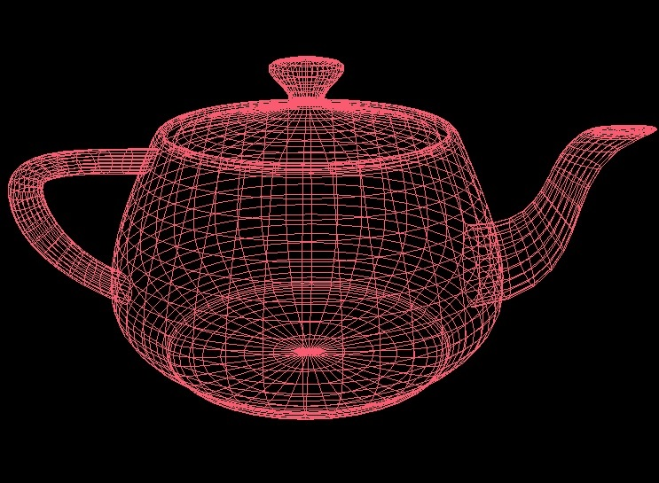
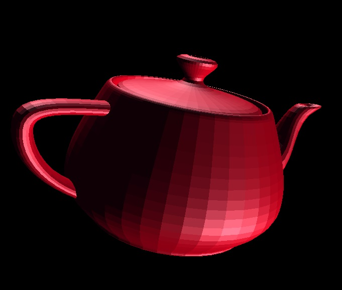
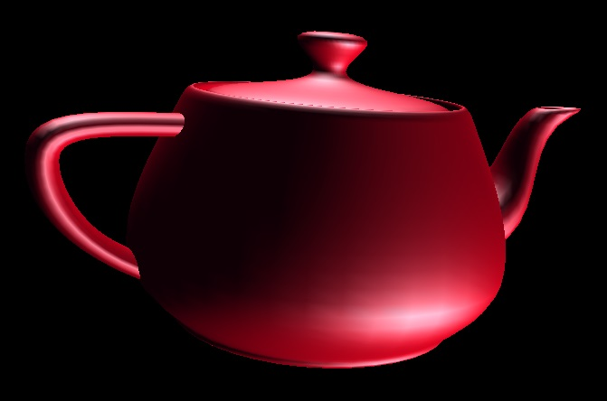
Adaptive Subdivision, parameter 0.1
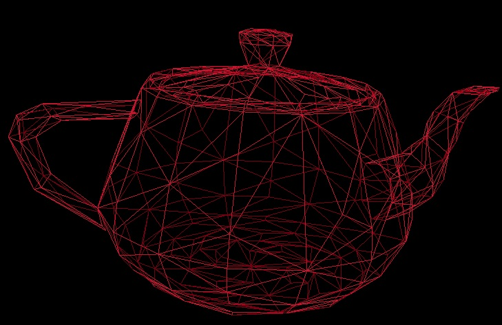
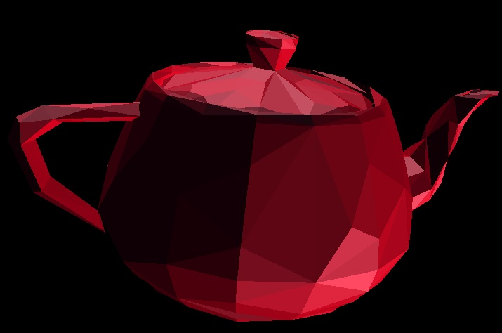
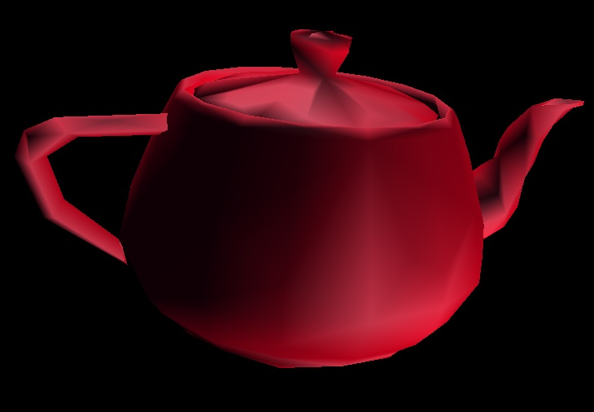
Adaptive Subdivision, parameter 0.01
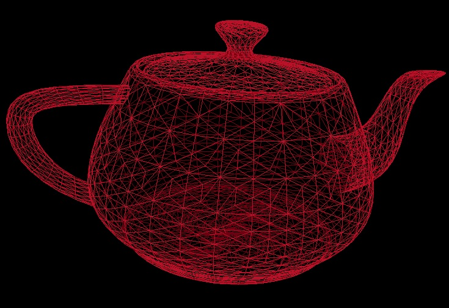
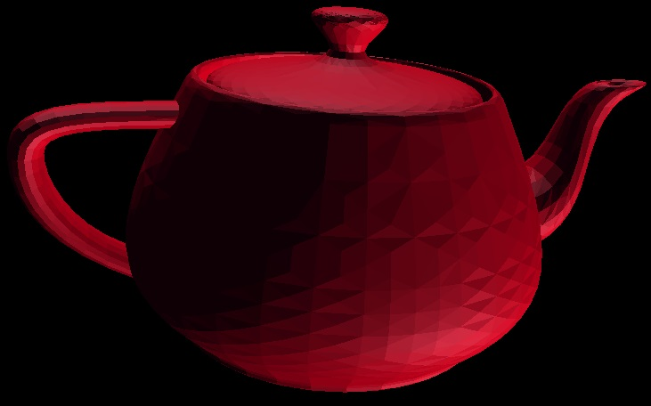
Test Surface Image(s):
Uniform Subdivision, step 0.1
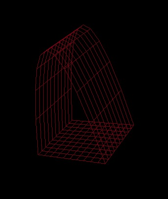
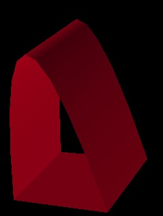
Adaptive Subdivision, parameter 0.1
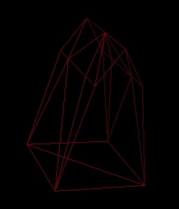
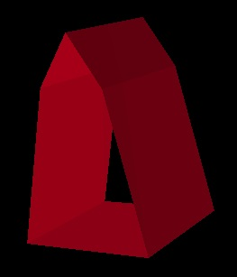
Adaptive Subdivision, parameter 0.01
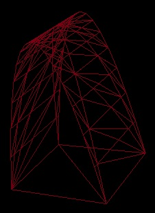
Back